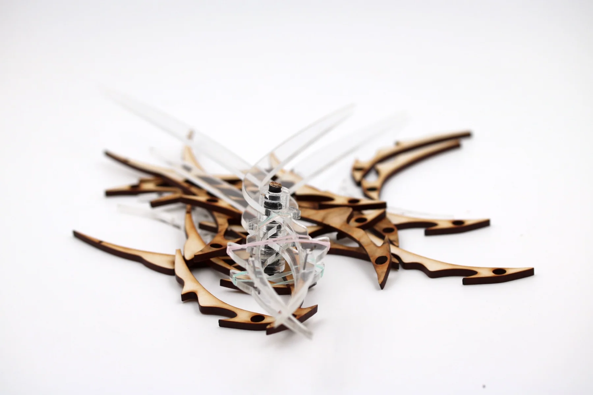
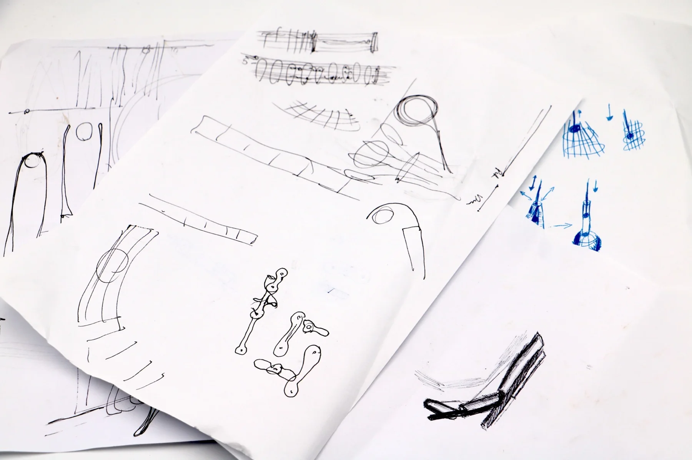
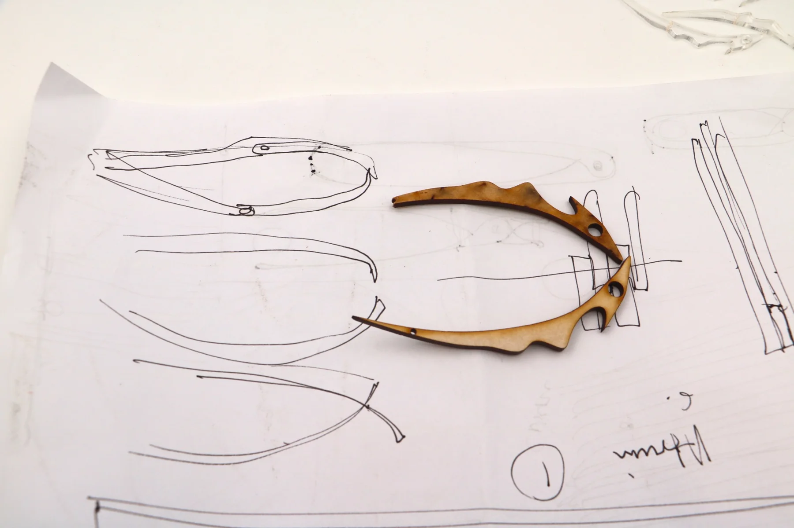
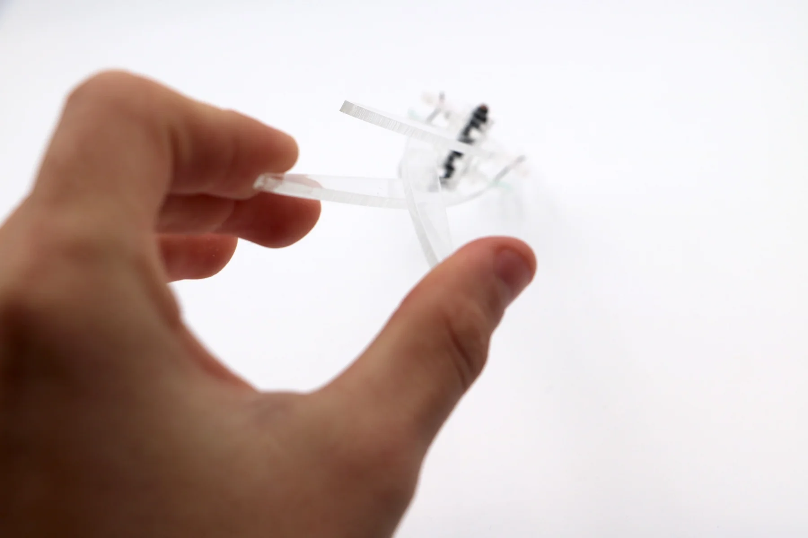
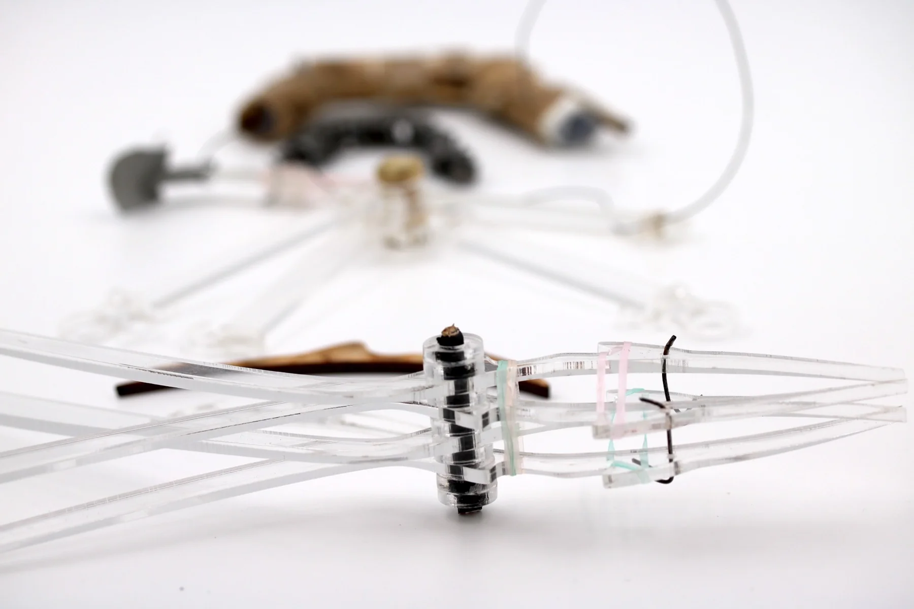
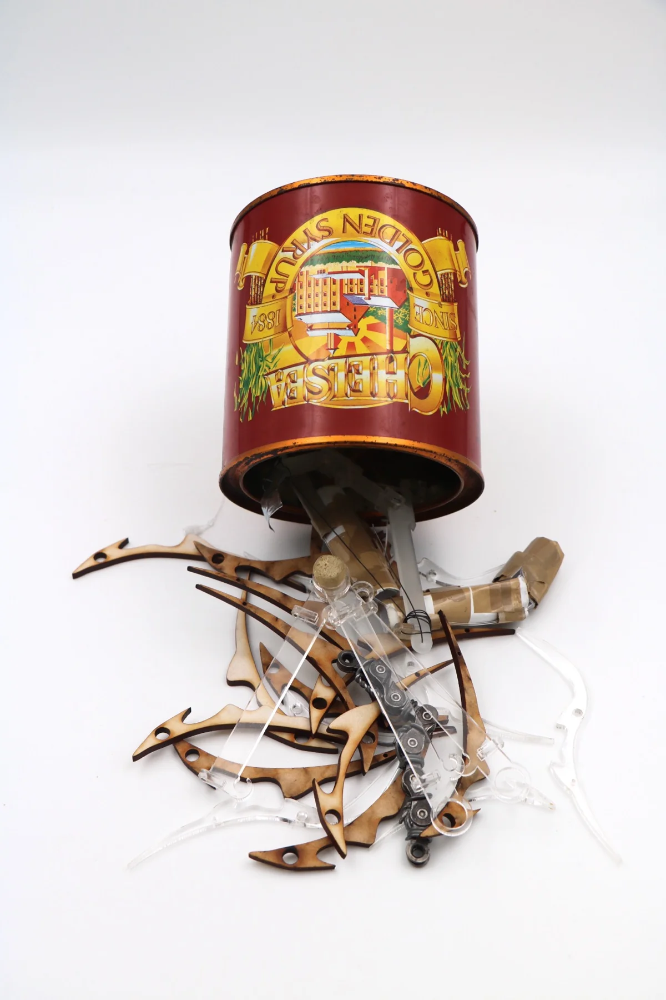

Ball Grabber
A mechanical study of cable-actuated fingers, fabricated joints and gripping motion.


01 / Exploration
Finding a way
to grip.
Ball Grabber explores how a cable-actuated mechanism can create gripping motion. The project develops a hand-like structure through sketches, fabricated parts and physical assembly.
Rib geometry, joints and cable routing are visible in the prototype, making the mechanism itself part of the design investigation.




02 / Making
From components
to movement.
The photographs document the path from individual ribs and joints to an assembled gripping structure. Transparent parts expose the relationships between the cables, contact points and moving elements.




03 / Prototype
Testing the assembled form.
The assembled prototype was used to explore how the mechanism closes around an object. This stage brings the movement and the overall form into the same physical test.


Next project